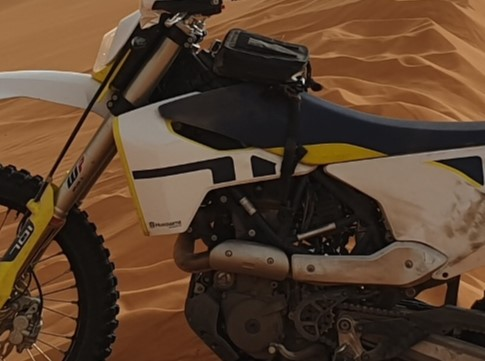

Mijn derde Marokko reis! We gaan met dezelfde vier mensen als de laatste keer in 2017 (Björn, Steven, Rene en ikzelf) en we hebben allemaal vrijwel dezelfde motor: een KTM 690 waar ik zelf op rijd, twee husqvarna's 701 en een Gasgas 700. Ze lijken anders maar zijn qua onderdelen precies gelijk, wat wel zo handig is bij pech. Deze keer reizen we vanaf Sete in Frankrijk met de veerboot naar Nador. Een bootreis van 43 uur bovenop een autoreis van 15 uur, en dat ook weer in omgekeerde richting, is wel erg veel reistijd, maar het scheelt kosten en gedoe met motortransport, vliegtickets en vooral de grensovergang. De laatste keer was ik nog dagen van de leg na het passeren van de grens in Melilla door alle chaos met hosselaars, onduidelijkheid over wat te doen en, ok, ik was toen ook mijn kentekenpapieren vergeten waardoor ik ter plekke door gemailde foto's te printen mijn papieren in orde moest maken.
Deze keer kunnen we alle formaliteiten (paspoort laten stempelen, voertuig inchecken) op de boot laten doen. Door de wachtrijen duurt dat in totaal bijna 4 uur, maar we hebben toch weinig beters te doen en het is in elk geval geen chaos. Op de boot ontmoeten we een Frans gezin met twee hele jonge kinderen. We zagen ze al terwijl we stonden te wachten op het moment dat we de boot konden oprijden. Het plan is om met de trein naar Marrakesh te reizen en vanaf daar terug te fietsen, ook de kinderen op hun eigen fietsjes, in een maand tijd. 'Ja, we zien wel of het lukt', lacht de vrouw. Ik kan alleen maar denken dat ze stapelgek zijn, maar in elk geval zijn het geen curling ouders.

Aangekomen in Nador kunnen we simpel de boot afrijden en de stad in. Daar ben ik zo dom om een simkaartje te kopen van één van de vele hosselaars op straat. Mijn vrienden kopen bij een Maroc telecom winkel een kaartje en lopen met een werkend toestel weg, ik ben zo ongeveer de hele avond vloekend bezig om allerlei codes te SMS'en met telkens hetzelfde resultaat: het werkt niet. De eerste avond verblijven we in Taourirt. Deze plaats kennen we nog uit 2017. Er was toen en ook nu maar één hotel open en de recenties liegen er niet om. Horror hotel, slechtste hotel ooit, hotel from hell etc. Allemaal waar maar omdat wij al eerder te gast waren, voldoet het volledig aan de verwachtingen. Smerige WC, smerige koude douche en paardendekens op de smerige bedden zonder lakens. Prima dus voor de eerste nacht. In de ochtend helpt een aardig meisje van een telecomwinkel mij met de simkaart. Verbinding met de wereld is hersteld.
De volgende dag gaat het echt beginnen. We hebben één lange track van 2400 KM die aan elkaar is geplakt van oude rally routes en eerdere reizen door onszelf of anderen. Alles zou dus te doen moeten zijn. Enige nadeel is dat sommige routes al erg oud zijn en misschien al tien jaar niet gereden. En dat er geen logisch begin en einde zit aan een route per dag. We moeten dus ergens de dag ervoor een idee hebben van de mogelijke slaapplaatsen ergens op de route. Voor noodgevallen hebben we ook tentjes mee zodat we sowieso wel altijd een slaapplek hebben.
We rijden al snel door de enorme leegtes zoals ik me herinner. Harde pistes zonder echt duidelijke wegen, maar een rood lijntje op de navigatie die de richting aangeeft. Het waait flink en af en toe best lastig om elkaar te zien, maar zonder problemen komen we aan in Talsinnt, waar we een luxe hotel vinden voor weinig.
De volgens dag waait het nog harder en het stof en zand gaat overal in zitten. Soms is het zicht echt maar een paar meter en in deze oneindige leegtes is het belangrijk goed bij elkaar te blijven. Ook zijn er donkere luchten om ons heen en af en toe valt er zelfs een spatje, maar de grote buiten, die aan de horizon goed zichtbaar zijn, gaat langs ons heen. De paden hier zijn stenig en soms zitten er verradelijk scherpe randen tussen. We krijgen dan ook al snel onze eerste lekke band. Maar hier zijn we op voorbereid en 20 minuten later zijn we weer op pad. We komen een jongen tegen op een brommer, midden in het niets. Hij wijst op zijn tank en maakt duidelijk zonder benzine te staan. Midden in de woestijn kun je iemand niet laten staan, dus we doneren een liter benzine. Hij bedankt, start in 1x zijn brommer en rijdt weg. Heu? Als je echt leeg staat start de motor toch niet direct? Dit trucje gaat vaker uitgehaald worden. Veel locals zien toeristen als benzine sponsors en doen alsof ze leeg staan. We stoppen dan ook niet meer in het vervolg. Helaas voor diegenen die werkelijk zonder benzine staan.
In de middag, het weer is inmiddels wat rustiger en de zon schijnt, hoor ik een keiharde knal. Dat moet een band zijn, realiseer ik me, maar beide banden zijn nog hard. Een steen dan die tegen de skidplaat is geknald? Ook mijn tas zit nog achterop en ik rijd verder, totdat opeens mijn achterwiel blokkeert. Koppeling intrekken helpt niets. Oh nee, een vastloper, denk ik, maar nogmaals kijken leert me dat er een trui tussen mijn ketting en tandwiel is ingedraaid. Hij zit muurvast. Maar waar komt de trui vandaan? Het is duidelijk mijn eigen crosstrui, maar die zit toch in mijn tas? Dan blijkt dat er een enorm gat in mijn tas zit. En dat allerlei spullen uit de tas zijn gevallen. Een gasflesje, die in mijn Jetboil lichtgewicht waterkoker zat, is ontploft. Door de kracht is de waterkoker als projectiel dwars door mijn nieuwe enduristan tas heen geschoten, heeft een groot gat gemaakt en daardoor is de inhoud van mijn halve tas inmiddels in de woestijn beland. Na veel knippen, trekken en vloeken is de trui weer uit mijn ketting en kettingspanner en kan ik als klein duimpje het spoor narijden van kleding, handdoeken en reserverbanden die over een kilometer verspreid achter me liggen. Met duct tape plak in mijn tas dicht en we kunnen verder na minstens een uur verloren te hebben.
Die avond besluiten we om in de eerste zandduinen te gaan slapen in onze tentjes. We zijn nog een flink stuk van Merzouga maar de eerste zandduinen zijn al zichtbaar. Ik vind het prachtig, terug in het zand, hier ben ik voor naar Marokko gekomen. We zoeken een beschut plekje achter een grote duin en gooien de tentjes neer. Binnen 2 minuten staan er een paar kleine kinderen om ons heen. Waar komen die vandaan? Er is helemaal niets zichtbaar om ons heen? Ze gooien een kleedje neer, zetten er wat frutsels op die wij schijnbaar mogen kopen en gaan met elkaar zitten spelen.
Het slapen in de tent lijkt een leuk idee maar de praktijk is anders. De wind is aangetrokken, de plek toch niet zo beschut en een haring blijft precies 0.1 seconde in het zand staan. Ook een steen op de haring plaatsen helpt helemaal niets. Dit kan wel eens een interessante nacht worden. De truc is om aan de scheerlijn een steen te binden, die steen in te graven en daar de tent mee op te zetten. De randen van de tent zelf graaf ik in en tot mijn vreugde blijft de tent staan. Helaas is de wind nog harder geworden, waardoor alles klappert en ik het gevoel houdt dat de tent elk moment weer de lucht in kan gaan. Mooi is het wel: als de zon is verdwenen zijn er oneindig veel sterren zichtbaar. En omdat er een bijna volle maan staat blijft het zicht prima, net alsof het zand sneeuw is dat het licht weerkaatst.
Na een onrustige nacht staan we vroeg op. De tent van Björn is helemaal vol met zand gewaaid, dwars door het muskietengaas, en ook ik heb een zacht laagje zand binnen liggen. Dat halen we later wel eruit. We pakken in en rijden over een lang zandpad door naar Merzouga, waar we in de middag al aankomen en een prachtige kasbah vinden aan de buitenkant van het dorp. Hier blijven we twee dagen zodat we een volle dag in de duinen kunnen spelen.
In de middag gaan we de eerste verkenning doen. We rijden wat onwennig de hoge duinen op. Direct zakt mijn voorwiel helemaal weg bij het afrijden. Oh ja, dat gebeurt als je niet goed naar achteren hangt en niet genoeg gas geeft. We leren snel en al gauw staan we onderaan een hoog duin waar we in 2017 ook hebben gereden. Toen op zware KTM 990's van dik 200 kilo, nu op veel lichtere machines van 150 kilo. Maar wel met minder vermogen. Een eerste poging om het duin op te klimmen mislukt, maar er zat niet veel overtuiging in. Meer snelheid maken voor de klim. Dan komt een groepje Spaanse rijders met KTM enduro machines aangereden. Ze stoppen, groeten ons, en geven dan gas. Ze rijden schijnbaar moeiteloos omhoog. En dat vanuit stand! Dan moeten wij het ook kunnen. Steven doet een poging en rijdt omhoog. Bij de spanjaarden parkeert hij op de top en zwaait.
Foto van Steven op de top
Nu ik. Nieuwe aanloop, voluit in de derde versnelling en gas openhouden. Ik hoor de toerenbegrenzing klagen maar het gaat goed, steeds hoger en hoger totdat ook ik bij de top kom. Ik parkeer de motor op de kam. Gelukt! Björn staat nog beneden en doet zijn eerste poging. Hij heeft veel snelheid en komt omhoog, omhoog, totdat hij bij de rand komt. Hij schiet er overheen, vliegt een stukje door de lucht en valt om.
Gelukkig is het zand zacht. Ook hij is boven! Tevreden staren we naar beneden. Dit is ons in 2017 niet gelukt.
De volgende dag rijden we een stuk rally route door de duinen. Het lijkt alsof we midden in een enorm doolhof staan. Hoe komen we hier ooit nog uit? Overal zandduinen te zien en nergens de uitgang. Alleen het rode lijntje van onze navigatie geeft de richting aan. We doen dik een uur over een afstand van een paar kilometer maar we komen eruit. Dit was best moeilijk, niet zozeer het technisch rijden zelf maar het zoeken naar een begaanbaar pad. Elk duin is anders, kan rond of juist heel steil aflopen en kan zacht of hard zijn, waardoor je telkens enorm op je hoede moet zijn en je volledig 'aan' moet staan. Mijn respect voor de Dakar rijders was al groot maar is nu nog eens flink toegenomen, die doen dit voor dagen achter elkaar. Mijn adrenalinepompje is leeg en tevreden breng ik de middag door aan het zwembad. In de namiddag gaan we nog een keer maar ik merk dat ik nog steeds leeg ben. Het gaat niet erg lekker en na een uurtje ga ik alweer terug. Eten, slapen en morgen nieuwe dag.
We rijden door vanaf Merzouga naar Lake Iriki over lange zandpaden met diepe sporen van de auto's die er voor ons doorheen reden. Best lastig en omdat Rene duidelijk moet wennen aan het zand is het tempo traag. Zand rijden is net als varen op de golven: als je sneller gaat 'glij' je veel makkelijker over het oppervlakte omdat de weerstand afneemt. Na een korte pauze krijgt Rene de geest. Hij volgt het achterwiel van Steven en bijt zich vast. Die gaat steeds sneller rijden met Rene er achteraan, al snel gaat het boven de 80 kilometer per uur. Dat is ook weer wat overdreven, er zitten diepe kuilen en zandheuvels op het pad waardoor we regelmatig een flinke sprong of klap maken. De vering van de 690 is duidelijk niet zo strak als een lichte enduro, maar beter dan de 990. Deze lichtere motoren doen het ook hier prima.
Na het zand bereiken we het drooggevallen meer Iriki. Dit lijkt wel de snelweg A2, strak wegdek en zo breed als 100 vliegtuigbanen naast elkaar. Midden in deze enorme leegte zijn om de paar kilometer cafe's met ook slaapplekken neergezet. Wij besluiten te stoppen bij de Titanic, een gebouw dat wel wat weg heeft van een schip. Terwijl we op het terras zitten, zien we in de verte auto's en buggy's met een enorme snelheid over de vlakte razen. Ook meerdere motoren komen voorbij. Aan de horizon zie we nog net de laatste zandduinen rondom het droge meer.
In de late middag rijden we naar de duinen die zich een paar kilometer verderop bevinden. Deze duinen zijn anders dan bij Merzouga. Minder hoog, zachter en steiler. Direct bij het eerste duin die Steven oprijdt zakt zijn voorwiel weg en hij slaat bijna over de kop. Opletten dus, maar al snel blijkt ook hier de eerdere techniek goed te werken. Naar achter hangen en vooral gas blijven geven. We pakken de toppen schuin zodat de afdaling niet zo heel steil is en af en toe springen we op de lage heuvels vanaf de top naar beneden in het zand. Dit gaat best goed en schijnbaar iets geleerd de afgelopen dagen. Tevreden rijden we terug naar de Titanic, waar we een Duitser en zijn Franse vrouw ontmoeten. Allebei enorm praatgraag, maar aardig en we krijgen koud bier van ze uit hun 4x4. Zo maak je vrienden.
De volgende dag verlaten we het zand en de vlaktes. We gaan nu richting Noorden en dat betekent dat we langzaam richting de bergen rijden. We overnachten heel fraai bij Oase de Fint, in een prachtige kasbah bij stromend water. Naast de kasbah zijn allerlei tuintjes aangelegd waar onder andere dadels en olijven groeien. In de kasbah treffen we een Nederlandse vader met zijn drie zonen die door de woestijn hebben gereden met een 4x4. Erg onder de indruk van de omgeving lijken de pubers niet te zijn. Ik hoor ze plannen maken over halloween feestjes in Nederland en verder kijken ze vooral op hun telefoon. Misschien dat de ballonreis die ze de dag erop vanuit Marrakesh gaan maken wel wat indruk gaat maken.
Indruk maakt de enorme zonne-energiecentrale vlakbij de woenstijnstad Ouarzarzate in elk geval als we daar de volgende dag langs rijden. Een enorm uitgestrekt terrein met hoge hekken eromheen, met in het midden een hoge toren die licht absorbeert en omzet naar energie met behulp van de spiegels die eromheen zijn geplaatst. Het lijkt op het oog van Sauron uit de LOTR films dat je van tientalllen kilometers afstand al loopt aan te staren. Gelukkig geen orks te zien, maar wel veel militairen die het complex bewaken. Deze centrale levert voor twee miljoen mensen energie, en dit is maar één van de zonne-energie projecten in Marokko. Naast de middeleeuwse dorpjes waar we doorheen zijn gereden is dit high tech project van een compleet andere orde.
We hebben een lange dag richting Midelt. Onze track loopt via een halfvergane asfaltweg, totdat we worden tegengehouden door een local. Hij legt uit dat de weg, die langs de rivier loopt, door de rivier is weggespoeld. We denken dat hij een paar honderd meter bedoeld en zien sporen van auto's door de vrijwel drooggevallen rivier, dus we besluiten voor de uitdaging te gaan. Er liggen redelijk grote stenen in en af en toe best wat water, maar de sporen van de auto's zijn duidelijk te volgen en die hebben de scherpe kantjes er wel af gehaald. Na een kilometer is de weg echter nog steeds niet terug. We komen een herder tegen die ons uitlegt dat we nog zeker 3 kilometer door de rivier moeten doorrijden. Teruggaan is opgeven, dus geen optie en we rijden door. Het bljken uiteindelijk dik vijf kilometer te zijn voordat de weg terugkeert. UItdagende kilometers maar blij dat we het hebben gedaan, daarom zijn we hier.
We komen op een verhard pad dat overgaat in een asfaltweg en ik denk dat we snel in Midelt zullen zijn, maar dan wijst de route omhoog, de bergen in, naar een stenig zandpad. Het is inmddels al 17 uur en over 1.5 uur is het donker, met nog 65 kilometer te rijden mogen we wel een beetje doorrijden. Het pad is mooi maar best lastig en harder dan 50 gemiddeld rijden we niet. Dan stuiten we op een rij stilstaande 4x4 auto's. het blijkt een groep Nederlanders op avontuur te zijn die net bezig zijn met het volgooien van een diepe greppel met stenen, omdat ook hier een stuk weg is verdwenen. Geluk voor ons, want wij kunnen de stenen gebruiken als bruggetje. We praten even kort met de Nederlanders, die we later weer in ons hotel zullen zien, en rijden dan door. Het laatste stuk naar Midelt is een hele brede gravelweg waar we met 120 overheen blazen. We ruiken de stal en zijn nog net voor het donker binnen.
Er volgen meerdere dagen van bergpaden rijden. Mooie vergezichten en we komen tot bijna 3000 meter hoogte waar we zelfs sneeuw zien liggen op de toppen ons ons heen. Wel veel halfvergaan asfalt maar de losse steentjes op deze smalle bergpaadjes maken het best spannend. De kleuren onderweg zijn adembenemend. Het landschap verandert van geel naar zwart in rood naar groen. De erosie door wind en water heeft heel bijzondere bergen en heuvels achtergelaten.
Op de één na laatste dag overnachten we in kasbah Farzal vlakbij het plaatsje Imouzzer Marmoucha. We zijn er al vroeg in de middag en besluiten een stukje te gaan wandelen naar de waterval in het dorp. Dat stelt weinig voor: een dun stroompje van een bergwand, overwoekerd met vuilnis. Wat een enorme rommel. Daar gaan ze geen toeristen mee lokken. We lopen door naar het centrum waar we water en snoep kopen en lopen via een zijstraat weer terug. Nu zijn we inmiddels wel gewend dat overal waar wij onze motoren of gezichten laten zien een stroom van kinderen onze kant op komt. Meestal vriendelijk met duimpjes, soms ook vervelend en vragend om geld of pennen. De kinderen hier zijn van de laatste categorie. Ze schelden van een afstandje en rennen om ons heen, vragend om geld. Eén jongetje op een fiets weet van geen ophouden. Ontophoudelijk roept hij in het Frans: 'meneer, meneer geef me geld!' Björn ijkt hem aan en vraagt dan, ook in het Frans: 'jongetje, jongetje, geef me je fiets!'. Hij kijkt even heel verbaasd, is dan stil en fietst weg.
Het eten in de kasbah is fantastisch en de gastheer, gastvrouw en hun schattige dochtertje superaardig, maar toch krijg ik iets verkeerds binnen waardoor ik de volgende dag ziek ben. Op de WC loopt alles fijn vloeibaar weg en ik maak me zorgen over de 300 kilometer die we vandaag richting Nador willen gaan afleggen. We rijden s'morgens nog een stuk track en het gaat niet goed in mijn buik. Dan stopt Björn op het stenige pad in de bergen waar we al enkele tientallen kilometers op rijden. Lekke band. Vervelend voor hem maar een kans voor mij om voor de eerste keer in mijn volwassen leven buiten in de bosjes plaats te nemen. Niets of niemand te zien in de wijde omgeving, dus wat kan mij het schelen. Dan komen er, binnen 1 minuut, twee jongetjes aangelopen. Ongelofelijk, waar komen die nu weer vandaan! Ik trek me toch terug achter een bosje en gelukkig volgen ze me niet. Poeh, dat lucht op. Na het plakken rijden we verder tot aan Taza, waar we een korte pauze nemen en dan de laatste 180 kilometer gaan rijden. Ik voel me inmiddels enorm beroerd en iets na vijf uur komen we aan in hotel Dakar, waar ik direct mijn bed in duik en tot de volgende ochtend lig te slapen. Gelukkig voel ik me iets beter.
Bij het hotel ontmoeten een mechanicien van een Spaans buggy team die net de Marokko rally en nog een andere rally heeft gereden. Hij gaat nu naar Spanje terug, om over twee maanden weer af te reizen naar Saoedi Arabie voor zijn 21e dakar rally. Stiekem raak ik hem even aan: dichter bij Dakar zal ik wel nooit komen. We zien hem later weer terug op de boot terug naar Frankrijk, al voor 12 uur aan het bier en zich duidelijk rot aan het vervelen. Misschien is het rally leven toch niet zo glamoureus als het lijkt.
Bij het wachten op de boot ontmoeten we een ouder stel: een op en top engelsman die meer weg heeft van een boekhouder dan een avontuurlijke motorrijder en zijn Franse vrouw. Ze zijn samen op een Triumph Tiger een paar weken in Marokko geweest. Ook offroad? Ja ook offroad. 'Dan gaan we beiden staan', legt hij uit, 'terwijl ze mijn middel vastpakt'. Het is een mooi beeld maar voor mij onbegrijpelijk om zo te reizen. Mijn vrouw zou ik in elk geval nooit zo gek krijgen. De bootreis zelf is nog saaier dan op de heenweg. Er is simpelweg niets te doen en op zee is er ook geen internet verbinding, dus we kunnen niet veel anders dan rondjes lopen op de boot en koffie drinken. We spreken één van de medewerkers van de boot uit Honduras, die maar liefst zes maanden achter elkaar aan boord verblijft, dan drie maanden naar huis om vervolgens opnieuw voor zes maanden te werken. Arme man.
Bij aankomst vinden we de auto en trailer gelukkig nog op dezelfde plek als waar we hem achterlieten en op koffie en red bull rijden we de hele nacht door, om uiteindelijk om 06.00 uur veilig in Amsterdam aan te komen. Marokko, tot een volgende keer.